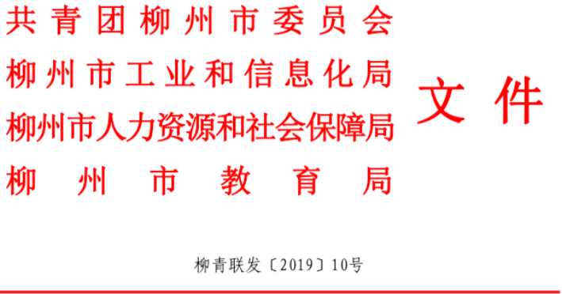
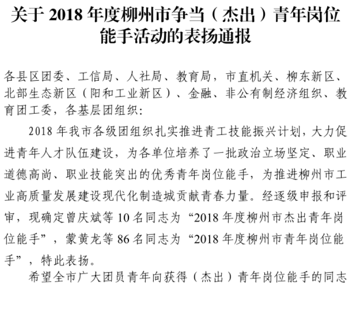
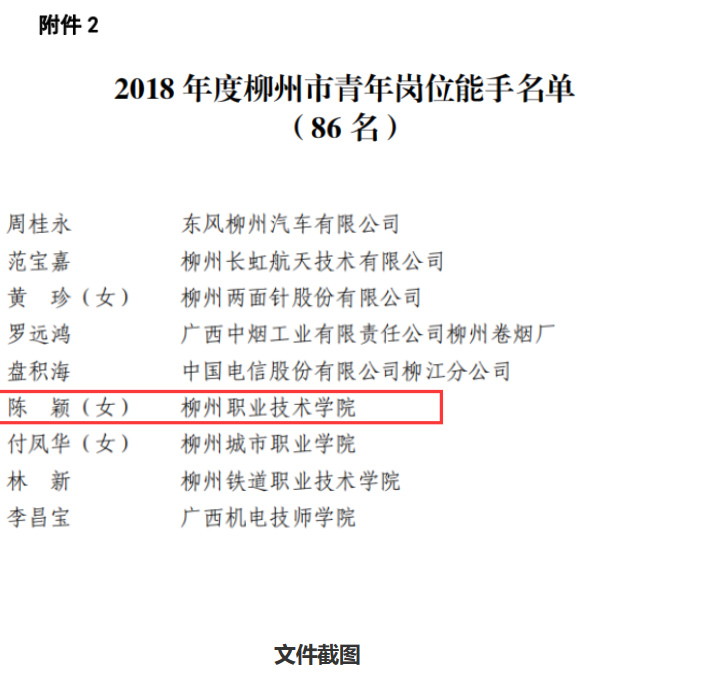

喜讯：我校教师陈颖荣获“2018年度柳州市青年岗位能手”称号
来源： 发布时间：2019-07-04 08:56:16 浏览次数：26 次 【字体：小 大】
新闻网消息（文、图/校团委 覃露颖） 2019年6月29日，校团委从团市委下发的文件中获悉，
经逐级申报评选，我校教师陈颖获得“2018年度柳州市青年岗位能手”荣誉称号。
陈颖作为一名青年教师，积极参与教育教学改革工作，勤于思考，不畏困难，刻苦专研，
主持参与6项教改课题，所授课程被评为校级精品课，并多次代表学校参加区级教育教学比赛，
共获得3项省级奖项、3项校级奖项，具有较高的教育教学水平。指导学生竞赛成绩优异，
代表广西进入全国总决赛，同时将技能大赛带队经验和专业理念引入会计团队，
指导团队先后获得国家级奖项3项、区级奖项5项。
此次表彰激励着我校广大青年立足岗位、对标争先，大力弘扬创新精神、
工匠精神、担当精神，为全面推进学校“双高”建设贡献青春智慧和力量。


